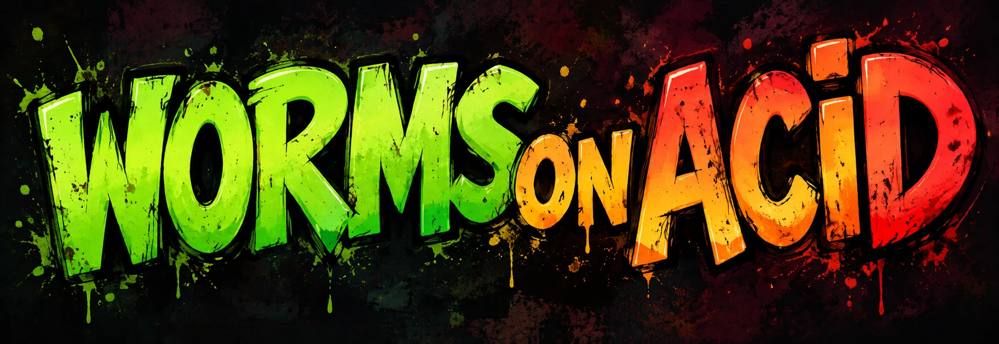
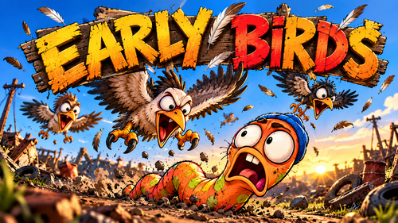
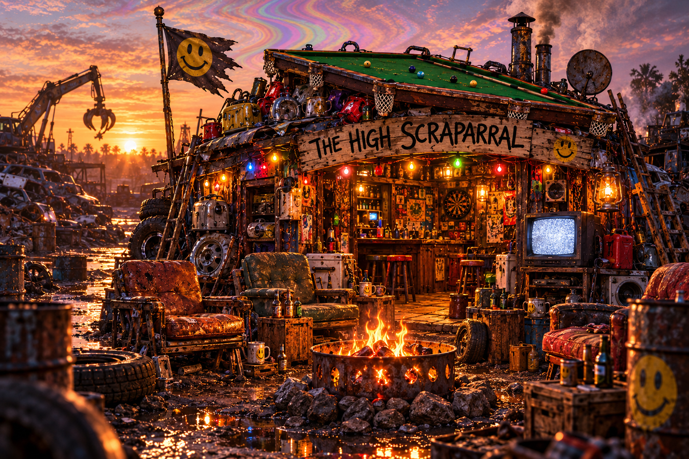
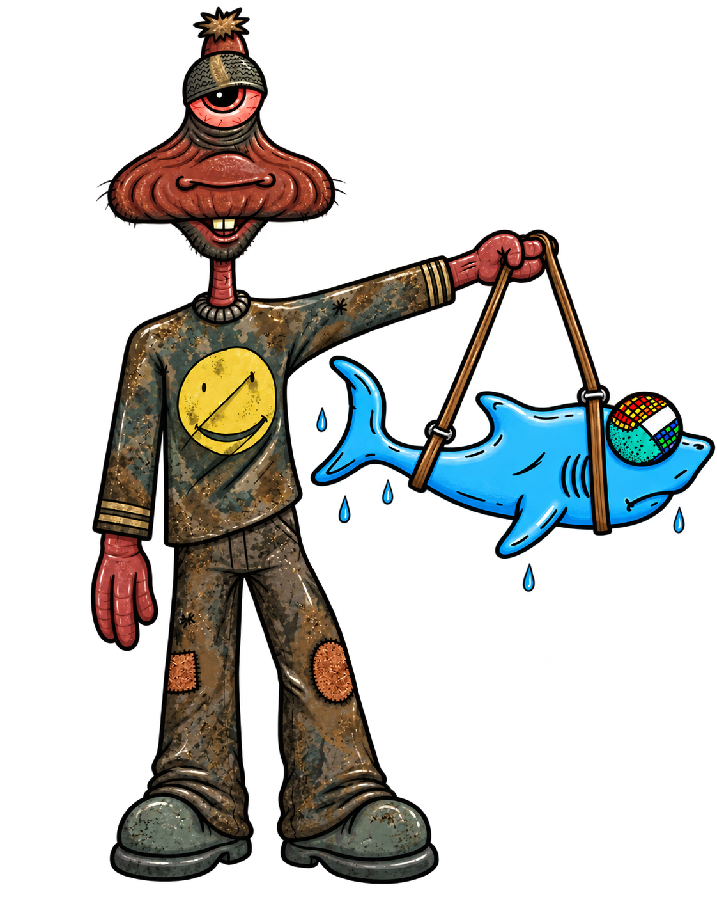
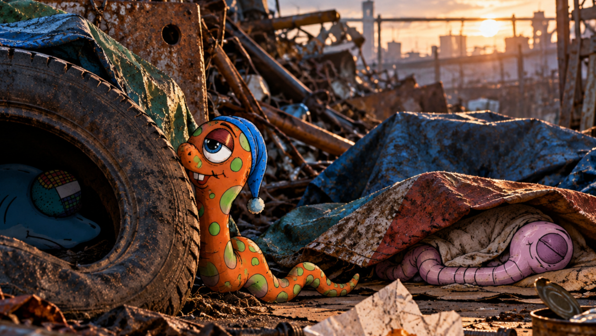

THE MORNING AFTER

He woke up in a scrapyard. He doesn't know where he is or what happened last night. He's taking it remarkably well.
VIEW NEXT

He woke up
in a scrapyard.
He doesn't know
where he is.
He doesn't know
where Nigel is.
He doesn't remember
what happened last night.
He's taking it remarkably well.
START ERIC'S STORY →They're worms. Something happened to them. They don't know what.
They travel around, encounter increasingly improbable situations, and occasionally discover things about themselves that they'd probably have been happier not knowing.
There are festivals. There are hallucinations. There is a shark who thinks he's a dog. And somewhere out there is Nigel's scrapyard.
Nobody is entirely sure what happened. Including the worms.
Scene 01 — The Morning After
He woke up in a scrapyard. He doesn't know where he is or what happened last night. He's taking it remarkably well.
VIEW NEXT“Places have a way of introducing themselves when they're ready.”
Eric keeps quiet for a bit.
He's among old tyres, scrap metal and things he doesn't immediately recognise. Somewhere nearby, something is breathing.
Another worm is asleep.
Nigel is missing.
Eric investigates carefully. He notices the tyre. He notices the breathing. He decides not to be the first thing it has for breakfast.
And then he waits.
Play, laugh, get distracted. It's all part of the journey.

Protect Eric from the early birds! Tap the birds before they get him.
PLAY NOW
Help Eric sneak into the festival without paying. Keep out of sight and find a way past security.

Turn useless junk into something brilliant. Make the right choices in Nigel's scrapyard.

Help Rufus catch the thing Nigel throws. Keep your eyes on the prize!
A few worms, a shark, and other interesting types.

Curious. Friendly. Generally optimistic. Takes most things remarkably well.
View Eric
Owner of The High Scraparral. Practical. Usually involved in something.
Meet Nigel
Chilled. Mysterious. Usually knows more than she says.
Meet Manni
A shark. Believes he is a dog. Loyal. Hungry. Complicated.
Meet RufusStrange places. Unexplained things. A few hints.
Nigel's scrapyard and home. Full of interesting things.
EXPLORE THE SCRAPYARD
Music. Lights. Worms. Things get weird.
ENTER THE FESTIVALSSomething important happened here. Eric remembers bits.
Don't ask. Not yet anyway.
DON'T ASKBe part of the story. Talk to Eric. Share. Speculate. See what happens.
Reply to @wormsonacid with your ideas, advice, questions or just say hello. Eric might listen. He might ignore you. He might misunderstand you.
𝕏 @wormsonacidIf the live feed doesn't load, view @wormsonacid on X →